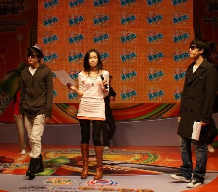

昨天天气突然变了非常的冷。
和BOBO一起代言美年达，组成快乐果味家族，一起参加了QQ飞车的决赛。
我们也在现场进行了一场飙车比赛。虽然我输了，但是重在掺和。
结束的时候，在后台遇见了夏老师，她身上有种很熟悉的味道，就像王老师给我的味道一样。
她问了陈琳的事情。突然觉得有点难过。
在我很小的时候就听《你的柔情我永远不懂》，后来她唱《爱就爱了》，觉得是一个非常洒脱非常拿得起放的下的人，对于这样的结局我觉得很可惜。
我们都没有权利伤害自己的生命。作为艺人我们当然会面对很多很多的压力，有时候是外界的，有时候是自己给自己的，有的时候是无形的。但是跳过了这些压力，我们会适应起来，会慢慢好起来，会成长起来。
就像突然变冷的天气，我们慢慢的适应了，穿上温暖的大衣，就算外面秋风萧瑟，依然还是有温暖。
你们都要好好的呀！